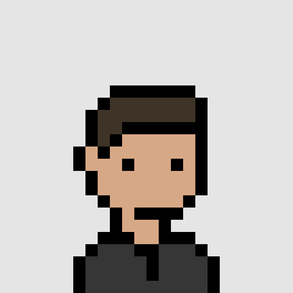

김병무 포트폴리오
Contact Me

Unemployables #1311
Introduction
고등학생 때부터 스스로 게임 개발을 시작하여 현재까지 다양한 게임을 개발하고 있습니다. 카이스트 창업팀에서 시작한 IT 스타트업 [셀렉트스타]에서 산업기능요원으로 2년간 프론트엔드 개발자로 근무하며 실무 경험을 쌓았습니다.
Skills
C# & Unity
Git
React & CSS & typescript
Kotlin
Education
경기과학고등학교 2016.03 ~ 2018.02
성균관대학교 소프트웨어학과 (현 GPA: 4.07) 2018.03 ~ 2024.02 (졸업 예정)
셀렉트스타 프론트엔드 개발자 2020.12 ~ 2023.02
Achivements and Certification
2019: 한국장학재단 주관 블리자드 푸른등대 기부장학금 대표장학생
2020: 동국대학교사범대학부속고등학교의 소프트웨어 캠프 게임개발 분야의 멘토
2020: 산책 어플리케이션 보헤미양을 활용하여 성균관대학교 주관 산책대회 운영